1 Background and Significance
The option to pursue an undergraduate degree may not be available to everyone, but for those with the choice, the decision often comes down to future wages. Some believe that starting work out of high school is the most profitable path while others believe the investment in a college education pays off in the long run. In a study by Carnevale et al. (2013), the lifetime, monetary value of a bachelor’s degree is $2.8 million. In comparison, those without a college degree earn 84% less than those with one. According to Carnevale et al., each additional level of education leads to an average lifetime earnings increase of around $400,000. In other words, pursuing a degree pays off in the long run. They do note that education is not the only factor in expected wages. Gender and major choice have massive impacts. Women who work full-time, full year earn 25% less than their male counterparts even when holding education level constant. Major choice can also lead to a wide variation in lifetime earnings. For those pursuing an undergraduate degree, choosing a specific major is quite daunting. Different majors lead to different career paths, and different career paths lead to different income levels. A study done by Schanzenbach et al. (2017) aimed to understand this wage variation by major choice. They noted that there is a wide variety in career path within each major, but by identifying a single career to hold constant (Financial Manager), they were able to better compare wages for each major. As expected, there was a very high amount of variation from major to major, but it seems that for those looking to become a financial manager, major choice can lead to an annual income anywhere between $50,000 to $115,000. While this range is significant, the implication of this study is limited to the world of financial managers. Schanzenbach et al. continued their study by analyzing average annual incomes for all occupations based on major choice. They found that this range was between $45,000 and $90,000. However, as Carnevale et al. stated, gender, along with major, is a major factor in income level. This idea was researched further by Sloane et al. (2021). They sought to understand the extent that major sorting by gender impacts the gender wage gap. According to Sloan et al., “women are systematically sorted into majors with lower potential wages relative to men.” This implies that income level is dependent on major choice which depends on one’s gender. By categorizing majors by the ratio of females to males in each major, they found that 60% of the wage gap can be explained by major choice. For our study, we would like to expand on Sloan et al’s findings by assessing how wages and employment differ for those who recently graduated with a major typically pursued by females versus a major typically pursued by males. While Sloan et al. focused on the wage gap, we would like to identify if laborers with majors that women are systematically sorted into receive lower wages, regardless of gender. By disregarding the notion of the wage gap, we will be able to provide unbiased results that definitively conclude if the majors that women pursue lead to lower potential wages. We believe that those who hold a major typically pursued by women have lower wages than those who hold a major typically pursued by men. The research questions that we are trying to answer is as follows: How does income differentiate for recent graduates that hold majors with a larger proportion of males versus females? In answering this question, we hope to identify the root cause of the gender wage gap and provide some guidance for closing this income disparity.
2 Data
The data was collected by the American Community Survey 2010-2012 Public Use Microdata Series. The experiment was conducted with 6,771,654 college graduates to determine the economic value of a college degree and how one’s major can affect their financial future. Respondents inbetween the ages of 18-24 were randomly surveyed across America and must have graduated with an undergraduate degree. These graduates are categorized into 173 rows where each row represents a specific major. There is only one major that does not have at least 100 graduates: Food Science. Since there were no graduates holding this major, we removed it from the data set. This lowered the number of majors to 172. In the original data set there are 21 total columns for each major. The variables are Rank (an ordinal categorical variable with a range of 1-172, with each number showing the number that a certain major is ranked, based upon median earnings (1 - Highest, 172 - Lowest)), Major Code (a nominal categorical variable with a range of 1100-6403, with each number showing the major code for the specified major in that row), Major (a nominal categorical variable with 172 levels, where each level describes a different major), Total (a discrete numerical variable that has a range of 124-393735, describing the total amount of people in a certain major), Men (a discrete numerical variable that has a range of 119-173809, describing the total number of male graduates in a certain major), Women (a discrete numerical variable that has a range of 0-307087, describing the total number of female graduates in a certain major), Major Category (a nominal categorical variable with 16 levels (Agriculture and Natural Resources, Arts, Biology and Life Science, Business, Communications and Journalism, Computers and Mathematics, Education, Engineering, Health, Humanities and Liberal Arts, Industrial Arts and Consumer Services, Interdisciplinary, Law and Public Policy, Physical Sciences, Psychology and Social Work, and Social Science)), Share of Women (a continuous numerical variable that has a range of 0-0.96895368 (range in decimal form), describing the percentage of women within each major), Sample Size (a discrete numerical variable that has a range of 2-4212, describing the sample size of each major), Employed (a discrete numerical variable that has a range of 0-307933, describing the number of people that are employed from a certain major), Full Time (a discrete numerical variable that has a range of 111-251540, describing the number of people that are working full time from a certain major), Part Time (a discrete numerical variable that has a range of 0-115172, describing the number of people that are working part time within a certain major), Full Time Year Round (a discrete numerical variable that has a range of 111-199897, describing the number of people that are working full time year round from a certain major), Unemployed (a discrete numerical variable that has a range of 0-28169, describing the number of people that are unemployed from a certain major), Unemployment Rate (a continuous numerical variable that has a range of 0-0.177226407 (range in decimal form), describing the unemployment rate within each major), Median (a discrete numerical variable that has a range of 22000-110000, describing the median earnings of full time year round workers in each major), 25th Percentile [P25th] (a discrete numerical variable that has a range of 18500-95000, describing the 25th percentile of earnings within each major), 75th Percentile [P75th] (a discrete numerical variable that has a range of 22000-125000, describing the 75th percentile of earnings within each major), Jobs that require Degree (a discrete numerical variable that has a range of 0-151643, describing the number of jobs that graduates have with a certain major that required a college degree), Jobs that don’t require Degree (a discrete numerical variable that has a range of 0-148395, describing the number of jobs that graduates have within a certain major that did not required a college degree), and Low Wage Jobs (a discrete numerical variable that has a range of 0-48207, describing the number of jobs that graduates have with a certain major that are low wage jobs).
The original data set holds 172 majors and 16 major categories. Since most school do not offer all 172 majors, we will be utilizing aggregated data for major categories. This will also provide for a better implication of the results as majors are typically referred to by their major category and not their specific name. This process was done by taking the average value of median income, share of women, unemployment rate, full-time rate, share working a job requiring a college degree, and share working a low wage job for all 16 major categories. We only provided averaged data for these 6 variables to limit multicollinearity in our model. Additionally, we created an indicator variable to categories majors as predominantly male or female. This variable takes the value of 1 if the share of women for a specific major category is greater than 50% and 0 if the share of women is less than 50%. Finally, for organization, a separate table was created to hold the total number of majors within each major category. In the end, our primary data frame consists of 16 rows of major categories and 8 columns indicating the major category, average median income, average share of women, average unemployment rate, average share of graduates working full time, average share of graduates working a job requiring a college degree, average share of graduates working a low-wage job, and an indicator variable for if the major category is predominantly made up of females.
3 Methodology
Our primary methodology revolves around the following regression:
Average Median Earnings = \({\beta}_0\) + \({\beta}_1\) * (Majority Female Major) + \({\beta}_2\) * (Unemployment Rate) + \({\beta}_3\) * (Full-Time Rate) + \({\beta}_4\) * (Degree Rate) + \({\beta}_5\) * (Low Wage Rate) + Noise
We are primarily interested in \({\beta}_1\) as it will indicate the impact of graduating with a predominantly female major on average median earnings. P-values will be used to test the statistical significance of our coefficients. To prevent against p-hacking, we divide the standard alpha of 0.05 by the number of hypothesis test we conducted (6) to set our significance level at 0.0083. We will also assess our residuals through plots (residuals versus fitted values and Q-Q plots) and metrics (R-squared and adjusted R-squared) to judge the fit of our model.
Further analysis will be conducted using plots: Box plots are used to illustrate the differences in average median income across predominantly female major categories and predominantly male major categories. Similarly, histograms are used to illustrate the number of predominantly female major categories for differing levels of average median income. This will effectively compare to the histogram of the number of predominantly male major categories for differing levels of average median income. Beyond this, scatter plots are used to show the relationship between average median income and the other explanatory variables in our regression (excluding the indicator variable for majority female majors). In total, there are four scatter plots that visualize the relationship between average median income for each major category and the proportion of graduates in each major category that are unemployed, employed full-time, employed in a job requiring a college degree, and employed in a low-wage job.
4 Results
Table 1 shows the results from our regression. Our model estimates an intercept of -$82,462. Clearly negative income is impossible; however, our model uses this negative value as a baseline to estimate how each explanatory impacts average annual income. For our primary variable of interest, our model estimates that graduating with a predominantly female major decreases average median income by $6,056. According to our model, a 1% increase in the percentage of graduates employed full time will lead to a $109,746 increase in average median income for each major category. An increase in the proportion of graduates employed in a job requiring a degree is estimated to increase average median income by $34,518. Surprisingly, average median income is estimated to increase by $26,094 and $121,144 for each increase in percentage of unemployed graduates and share working a low wage job within a specific major category respectively. If these estimates held true for the entire population, graduating with a predominantly female major has a more negative impact on average median income than graduating with a major that has a high unemployment rate. However, we must look at the p-values for these estimated coefficients to understand the reliability of our results. By doing this, we understand that none of our coefficients are statistically significant because all p-values are greater than 0.0083. It should be noted that the p-value of the dummy variable indicating if a major is predominantly female is the second smallest.
Table 2 shows our assessment of the residuals from our initial regression. We found that our model has an R-squared value of 0.678 and an adjusted R-squared value of 0.517. From this we understand that 67.8% of the variation in average median earnings is explained by our model. Furthermore, as the adjusted R-squared value is less than the original R-squared value, the fit of our model is weakened by the number of explanatory variables we included. The p-value of our entire model is 0.0254 which is well above the significance level. This implies that the culmination of all our explanatory variables do not provide a statistically significant relationship with average median income. Figure 1 holds two plots: residuals vs fitted and Q-Q plot. The plot of residuals vs fitted values show that the residuals are not randomly distributed. This implies that our model is missing additional explanatory variables. The Q-Q plot shows that only some of the residuals are normally distributed. The outer tails do not follow a linear pattern, so our model does not explain all the trends in the data.
The comparison of Figure 2 and 3 shows the different distribution of average median income for graduates holding a predominantly female major and graduates holding a predominantly male major. Using this plot comparison, the median income of predominantly male major graduates is far greater than the median income of predominantly female major graduates. In fact, the top quartile of income for predominantly female major graduates barely passes the second quartile of income for male major graduates. This wage disparity is further backed by the histograms provided in Figure 4 and 5 showing that there is a great density of predominantly male major graduates that earn more than most predominantly female major graduates. Figures 4, 5, 6, and 7 can be found within the appendix. These scatter plots are helpful for understanding the relationship between average median income and our explanatory variables besides our primary variable of interest (predominantly female major indicator). Figure 4 illustrates that average median income has a slightly negative relationship with unemployment rate, but, in our regression model, this relationship was deemed positive. This is caused by the introduction of other variables in our model. Since our regression includes more explanatory variables than just unemployment rate, the coefficient of unemployment rate must compensate for the effect of other variables while the scatter plot does not. Multicollinearity may also be playing a factor. The high correlation between unemployment rate and share of graduates working full time led to a high variance of the estimated coefficients. This effect is further seen in Figure 7. Figure 7 identifies a negative relationship between average median income and proportion of graduates working low-wage jobs. This negative relationship contrasts with our regression model for the same reason as Figure 4 because share working a low-wage job and share working a job requiring a college degree are highly correlated. Figure 5 shows that as the proportion of graduates working full-time increases within a major category, average median income tends to rise. Finally, the relationship between average median income and proportion of graduates working at a job requiring a college degree is deemed slightly positive by Figure 6. Both Figure 5 and Figure 6 support the coefficients estimated by our regression model.
# A tibble: 16 × 9
Major_categ…¹ avera…² avera…³ avera…⁴ avera…⁵ avera…⁶ avera…⁷ major…⁸ women…⁹
<chr> <dbl> <dbl> <dbl> <dbl> <dbl> <dbl> <int> <dbl>
1 Agriculture … 35111. 0.405 0.0518 0.871 0.360 0.116 9 0
2 Arts 33062. 0.604 0.0902 0.721 0.367 0.209 8 1
3 Biology & Li… 36421. 0.587 0.0609 0.794 0.543 0.141 14 1
4 Business 43538. 0.483 0.0711 0.908 0.230 0.116 13 0
5 Communicatio… 34500 0.658 0.0755 0.827 0.333 0.150 4 1
6 Computers & … 42745. 0.312 0.0843 0.872 0.649 0.0678 11 0
7 Education 32350 0.749 0.0517 0.830 0.736 0.0852 16 1
8 Engineering 57383. 0.239 0.0633 0.908 0.725 0.0597 29 0
9 Health 36825 0.795 0.0659 0.792 0.690 0.0840 12 1
10 Humanities &… 31913. 0.632 0.0810 0.766 0.411 0.173 15 1
11 Industrial A… 36343. 0.350 0.0481 0.801 0.353 0.141 7 0
12 Interdiscipl… 35000 0.771 0.0709 0.818 0.570 0.108 1 1
13 Law & Public… 42200 0.484 0.0908 0.877 0.226 0.143 5 0
14 Physical Sci… 41890 0.509 0.0465 0.811 0.607 0.101 10 1
15 Psychology &… 30100 0.794 0.0721 0.760 0.492 0.148 9 1
16 Social Scien… 37344. 0.554 0.0957 0.865 0.375 0.135 9 1
# … with abbreviated variable names ¹Major_category, ²average_income,
# ³average_women, ⁴average_unemploy, ⁵average_full, ⁶average_degree,
# ⁷average_low, ⁸major_count, ⁹women_dummy# A tibble: 16 × 2
# Groups: Major [16]
Major Count
<fct> <int>
1 Agriculture & Natural Resources 9
2 Arts 8
3 Biology & Life Science 14
4 Business 13
5 Communications & Journalism 4
6 Computers & Mathematics 11
7 Education 16
8 Engineering 29
9 Health 12
10 Humanities & Liberal Arts 15
11 Industrial Arts & Consumer Services 7
12 Interdisciplinary 1
13 Law & Public Policy 5
14 Physical Sciences 10
15 Psychology & Social Work 9
16 Social Science 9# A tibble: 6 × 5
term estimate std.error statistic p.value
<chr> <dbl> <dbl> <dbl> <dbl>
1 (Intercept) -82462. 70009. -1.18 0.266
2 women_dummy -6056. 3635. -1.67 0.127
3 average_unemploy 26094. 92321. 0.283 0.783
4 average_full 109746. 61629. 1.78 0.105
5 average_degree 34815. 20660. 1.69 0.123
6 average_low 121144. 118988. 1.02 0.333# A tibble: 1 × 12
r.squ…¹ adj.r…² sigma stati…³ p.value df logLik AIC BIC devia…⁴ df.re…⁵
<dbl> <dbl> <dbl> <dbl> <dbl> <dbl> <dbl> <dbl> <dbl> <dbl> <int>
1 0.678 0.517 4589. 4.21 0.0254 5 -154. 322. 327. 2.11e8 10
# … with 1 more variable: nobs <int>, and abbreviated variable names
# ¹r.squared, ²adj.r.squared, ³statistic, ⁴deviance, ⁵df.residual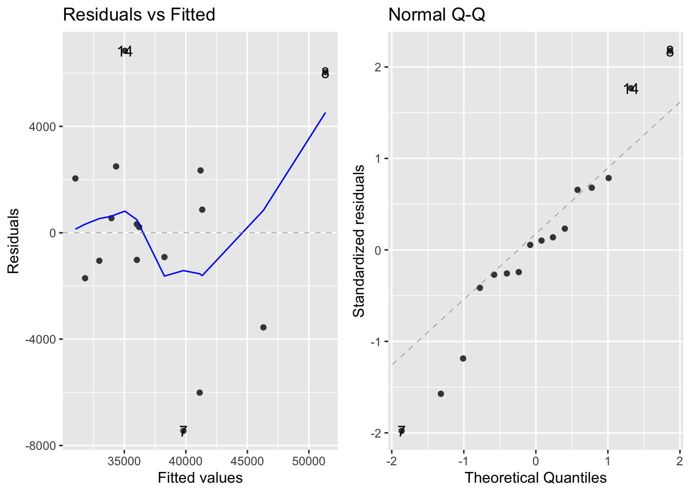
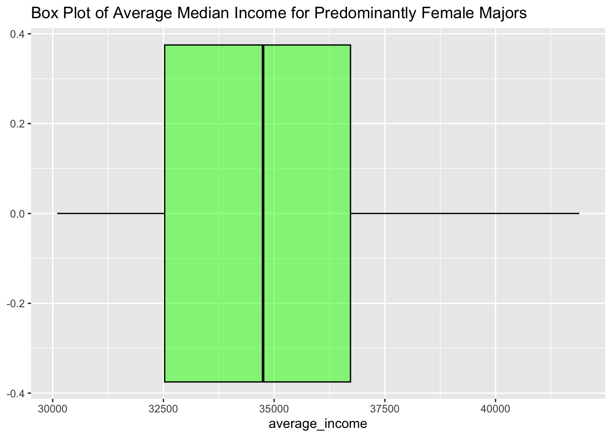
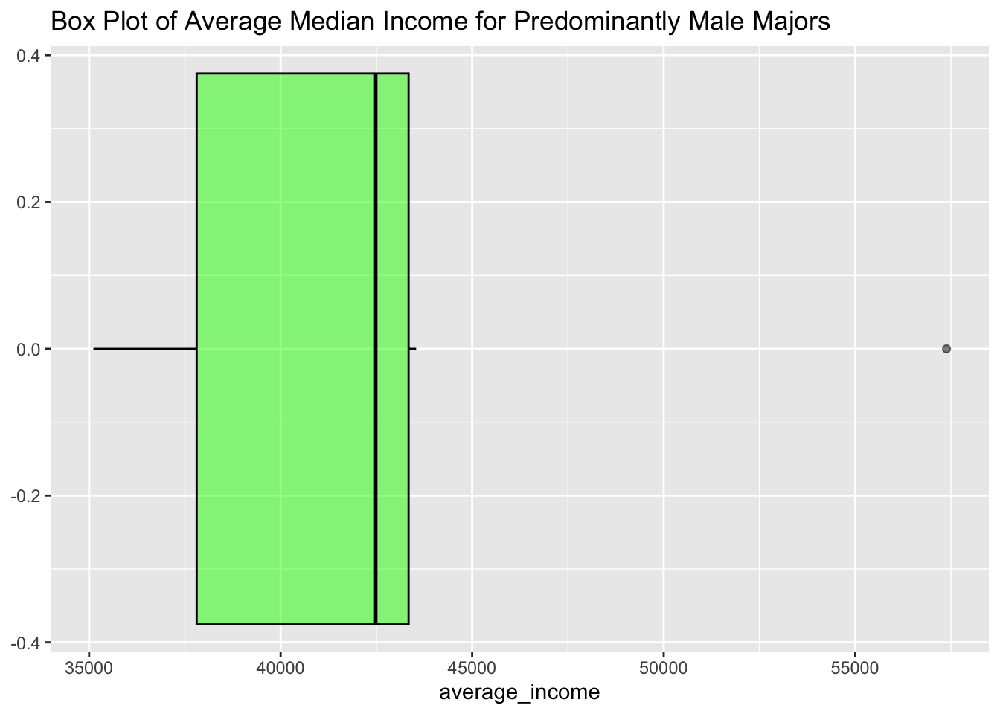
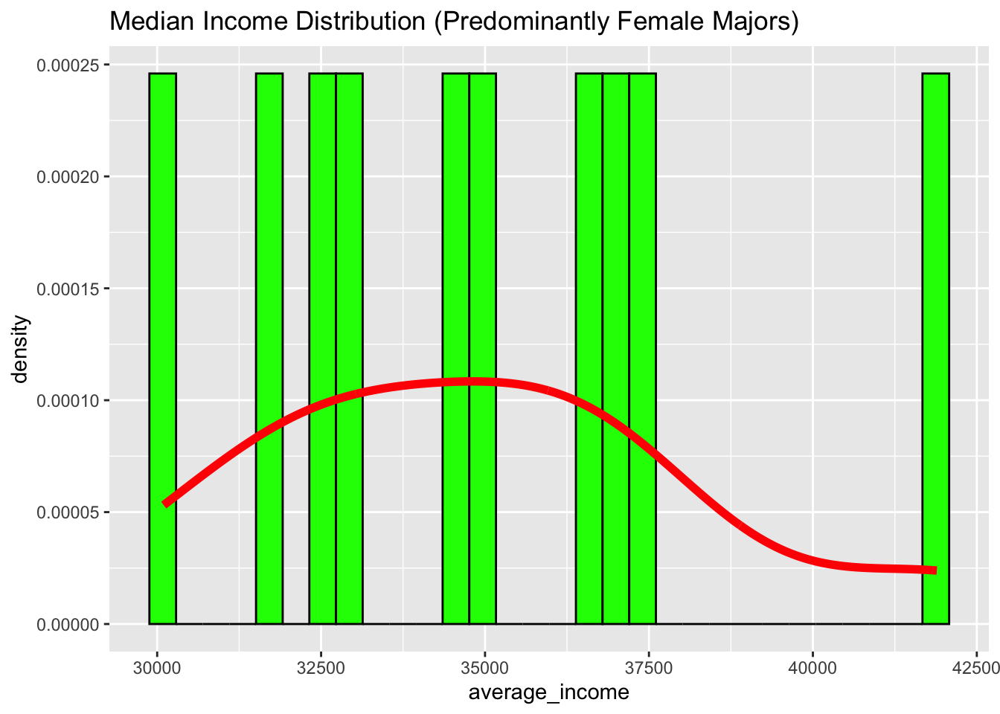
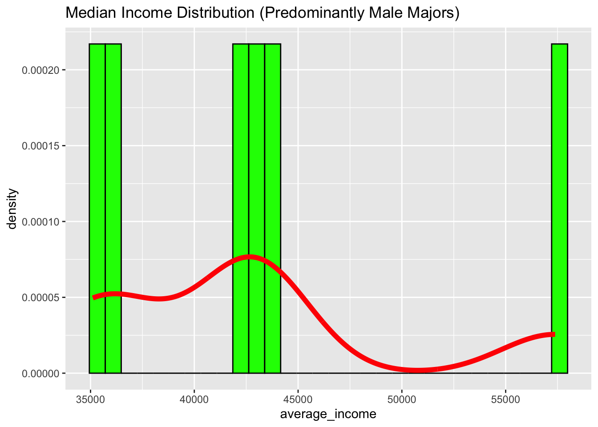
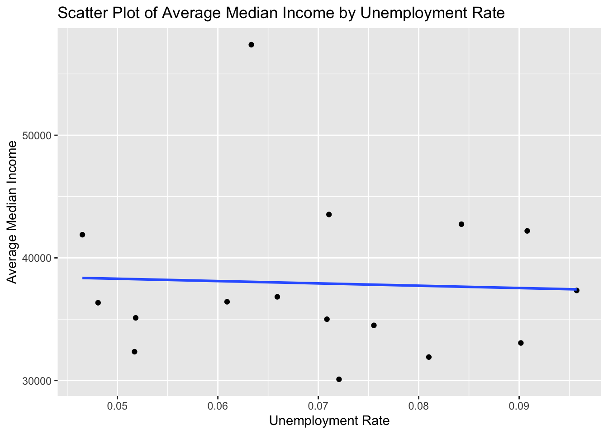
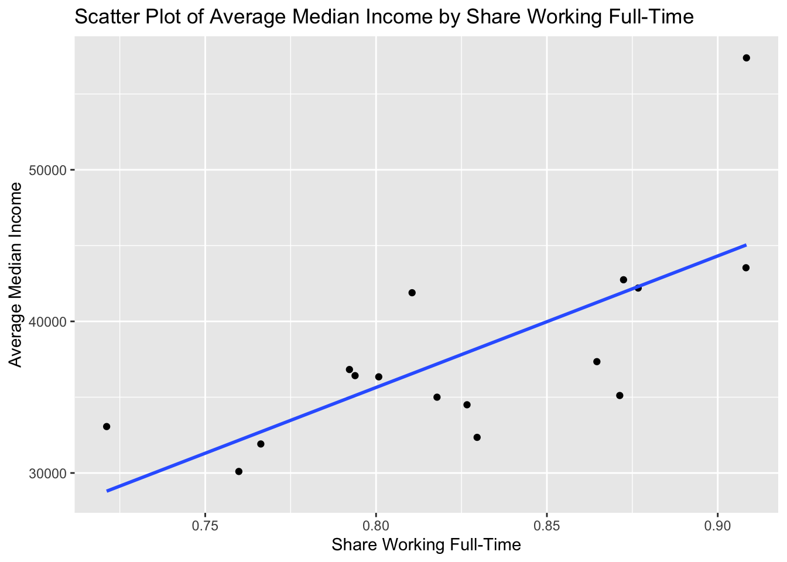
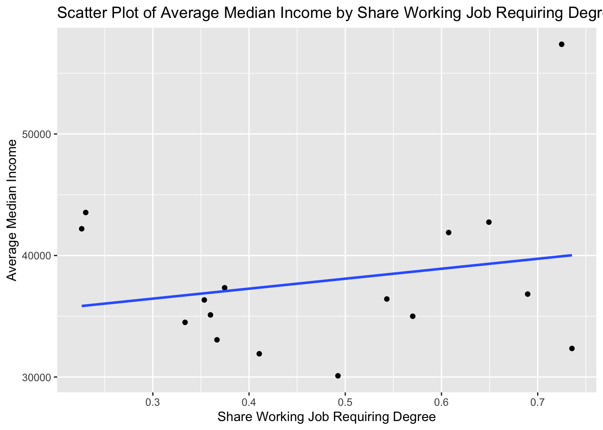
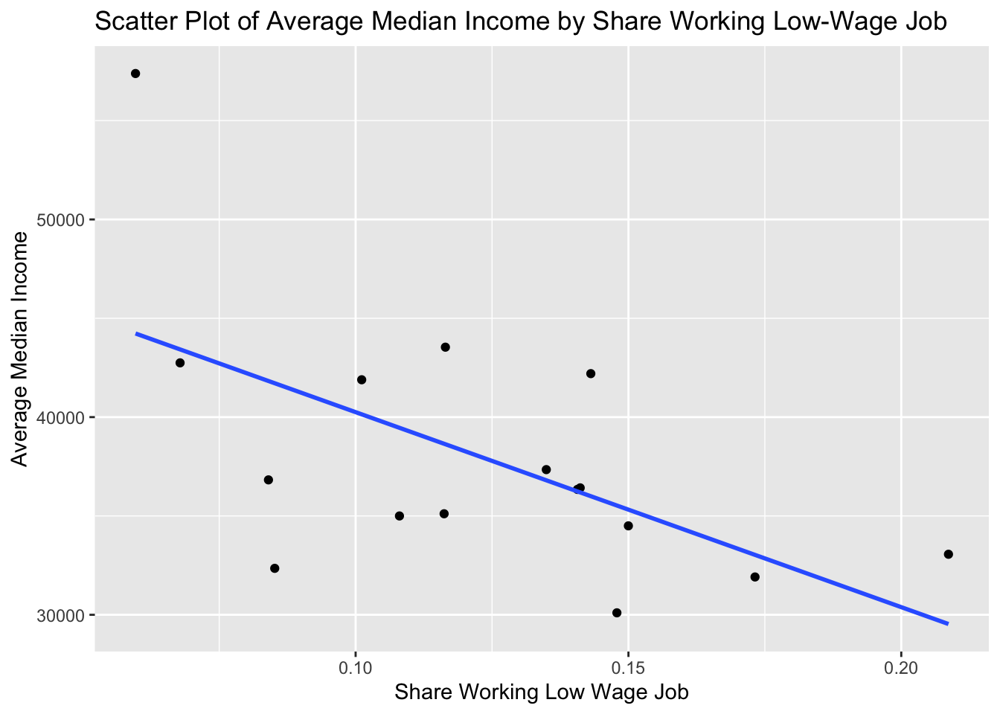
5 Discussion/Conclusions
Our study attempted to determine if the wage gap stems from the different majors that men and women pursue. Prior to completion we believed that, on average, recent graduates holding a predominantly female major earn less than those holding a predominantly male major. This hypothesis was tested through a multivariate regression, residual analysis, and plot comparison. As none of our estimated coefficients were statistically significant, we can not draw a valid conclusion. Keeping this in mind, our model estimated that those with a predominantly female major earn $6,056 less than those with a predominantly male major. This confirms our initial hypothesis and the beliefs of Sloan et al. (2021). Sloan et al. studied how income differed between men with male dominated majors and women with female dominated majors, and we expanded upon this by strictly studying how income differed between predominantly male and female majors regardless of individual gender. This allowed us to hold gender constant and better assess if anyone with a predominantly female major earns less than anyone with a predominantly male major. By disregarding the gender wage gap, we provided more ethical, unbiased results and a stronger base of future research.
Our study was limited by the structure of our data. Since the original data set was already categorized, we were unable to take advantage of the 6,771,654 individual responses. Therefore, we were limited to averages for the 16 major categories. Additional variables related to income (place of residence, parent’s income, marital status, etc.) would provide further benefit by increasing the specificity of our model. These data limitations provided us with statistically insignificant results, so our findings can not be cited as evidence. Furthermore, the estimated coefficients of unemployment rate and share working a low wage job were forced to react to our other explanatory variables. This provided an incorrect, positive relationship between these two variables and average median earnings. Future research could improve upon this model with the inclusion of additional explanatory variables and exclusion of certain variables that are highly correlated with other independent variables.
While our study did not provide statistically significant findings, we estimated that there is a difference in median earnings for those that hold a predominantly female major and a predominantly male major. This coincides with the findings of other studies surrounding the gender wage gap, and hopefully, our unbiased approach elevates the standard for future research in this topic.
6 References
7 Appendix
7.1 Numerical Summary
vars n mean sd median trimmed mad
Rank 1 172 87.38 49.98 87.50 87.47 63.75
Major_code 2 172 3895.95 1679.24 3608.50 3912.94 2074.16
Major* 3 172 86.50 49.80 86.50 86.50 63.75
Total 4 172 39370.08 63483.49 15104.00 23613.54 18020.26
Men 5 172 16723.41 28122.43 5434.00 9398.52 6569.40
Women 6 172 22646.67 41057.33 8386.50 12611.58 10546.48
Major_category* 7 172 8.02 4.21 8.00 7.91 4.45
ShareWomen 8 172 0.52 0.23 0.53 0.53 0.28
Sample_size 9 172 357.94 619.68 131.00 203.64 156.41
Employed 10 172 31355.81 50777.43 12031.50 18720.63 14196.64
Full_time 11 172 26165.77 42957.12 10073.50 15263.80 11947.53
Part_time 12 172 8877.23 14679.04 3332.50 5508.59 4157.21
Full_time_year_round 13 172 19798.84 33229.23 7436.50 11385.70 8758.46
Unemployed 14 172 2428.41 4121.73 905.00 1406.09 1137.15
Unemployment_rate 15 172 0.07 0.03 0.07 0.07 0.03
Median 16 172 40076.74 11461.39 36000.00 38523.19 5930.40
P25th 17 172 29486.92 9190.77 27000.00 28253.99 5930.40
P75th 18 172 51386.63 14882.28 47000.00 49363.77 10378.20
College_jobs 19 172 12387.40 21344.97 4467.50 7699.46 5485.62
Non_college_jobs 20 172 13354.33 23841.33 4603.50 7491.81 5835.51
Low_wage_jobs 21 172 3878.63 6960.47 1238.50 2187.25 1555.99
min max range skew kurtosis se
Rank 1 173.00 172.00 -0.01 -1.21 3.81
Major_code 1100 6403.00 5303.00 0.05 -1.49 128.04
Major* 1 172.00 171.00 0.00 -1.22 3.80
Total 124 393735.00 393611.00 2.83 8.93 4840.57
Men 119 173809.00 173690.00 2.79 8.37 2144.32
Women 0 307087.00 307087.00 3.53 15.67 3130.59
Major_category* 1 16.00 15.00 0.24 -0.79 0.32
ShareWomen 0 0.97 0.97 -0.13 -0.95 0.02
Sample_size 2 4212.00 4210.00 3.13 11.36 47.25
Employed 0 307933.00 307933.00 2.80 8.70 3871.74
Full_time 111 251540.00 251429.00 2.78 8.28 3275.45
Part_time 0 115172.00 115172.00 3.55 17.41 1119.27
Full_time_year_round 111 199897.00 199786.00 2.87 8.84 2533.70
Unemployed 0 28169.00 28169.00 3.11 11.64 314.28
Unemployment_rate 0 0.18 0.18 0.30 0.92 0.00
Median 22000 110000.00 88000.00 2.03 7.41 873.92
P25th 18500 95000.00 76500.00 2.68 13.80 700.79
P75th 22000 125000.00 103000.00 1.81 4.85 1134.76
College_jobs 0 151643.00 151643.00 3.70 16.62 1627.54
Non_college_jobs 0 148395.00 148395.00 3.31 12.24 1817.88
Low_wage_jobs 0 48207.00 48207.00 3.27 12.64 530.737.2 Visual Summaries
# A tibble: 16 × 2
# Groups: Major [16]
Major Count
<fct> <int>
1 Agriculture & Natural Resources 9
2 Arts 8
3 Biology & Life Science 14
4 Business 13
5 Communications & Journalism 4
6 Computers & Mathematics 11
7 Education 16
8 Engineering 29
9 Health 12
10 Humanities & Liberal Arts 15
11 Industrial Arts & Consumer Services 7
12 Interdisciplinary 1
13 Law & Public Policy 5
14 Physical Sciences 10
15 Psychology & Social Work 9
16 Social Science 9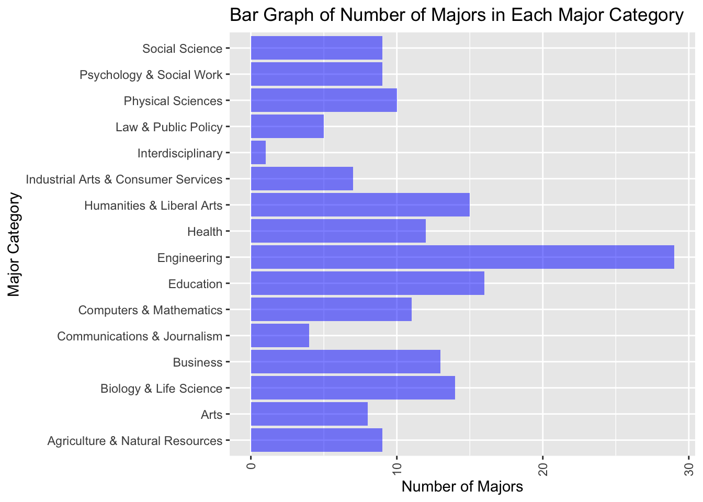
# A tibble: 16 × 2
Major_category grad_count
<fct> <dbl>
1 Agriculture & Natural Resources 75620
2 Arts 357130
3 Biology & Life Science 453862
4 Business 1302376
5 Communications & Journalism 392601
6 Computers & Mathematics 299008
7 Education 559129
8 Engineering 537583
9 Health 463230
10 Humanities & Liberal Arts 713468
11 Industrial Arts & Consumer Services 229792
12 Interdisciplinary 12296
13 Law & Public Policy 179107
14 Physical Sciences 185479
15 Psychology & Social Work 481007
16 Social Science 529966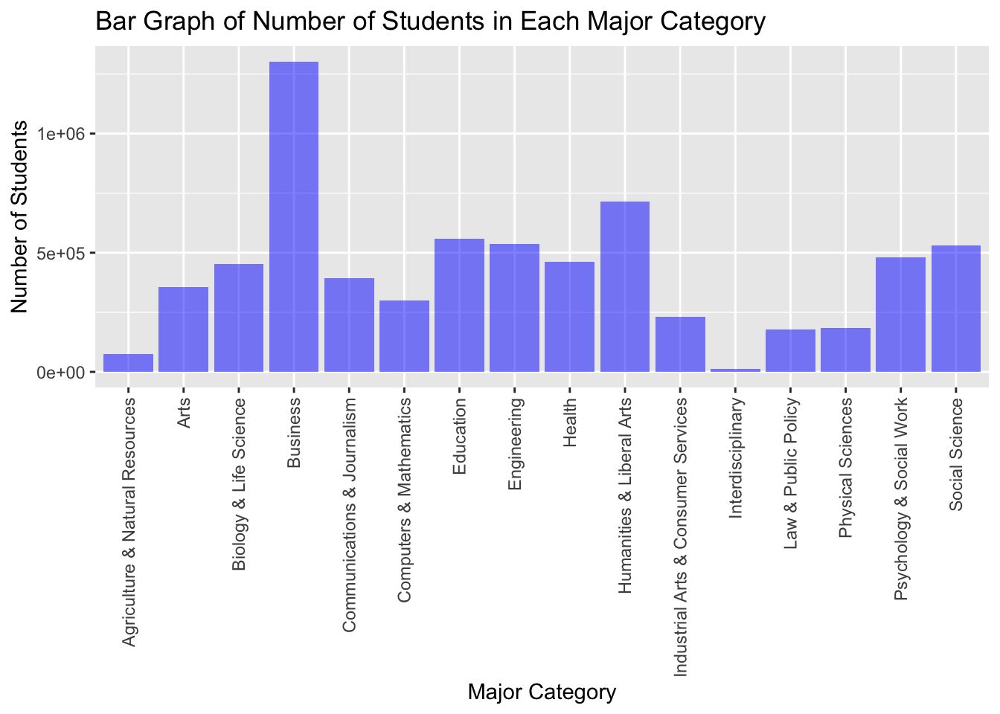
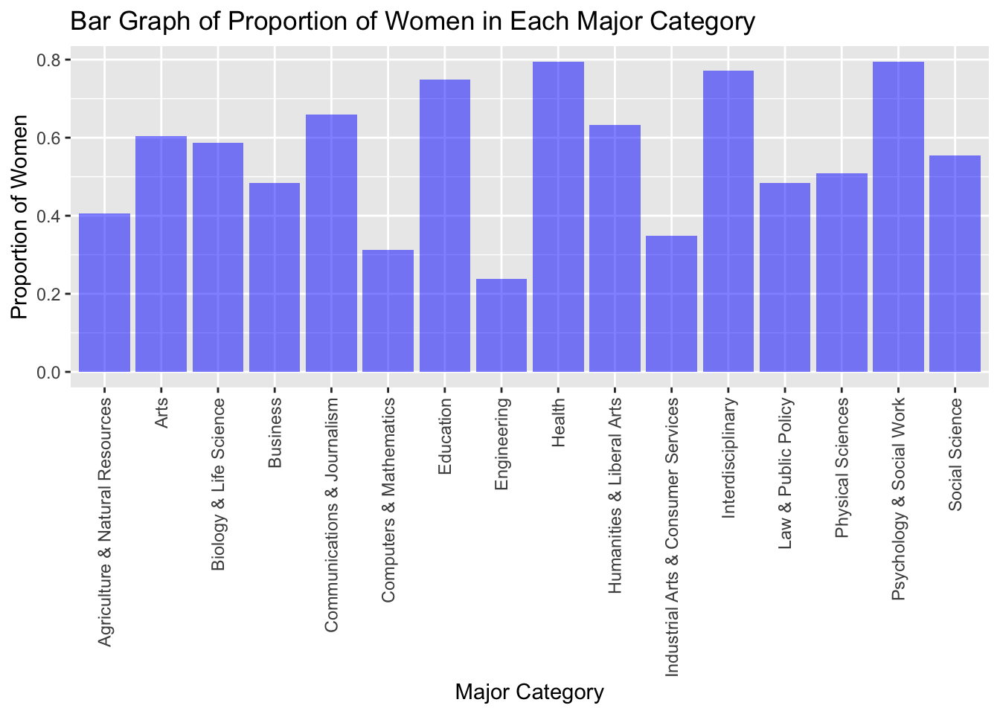
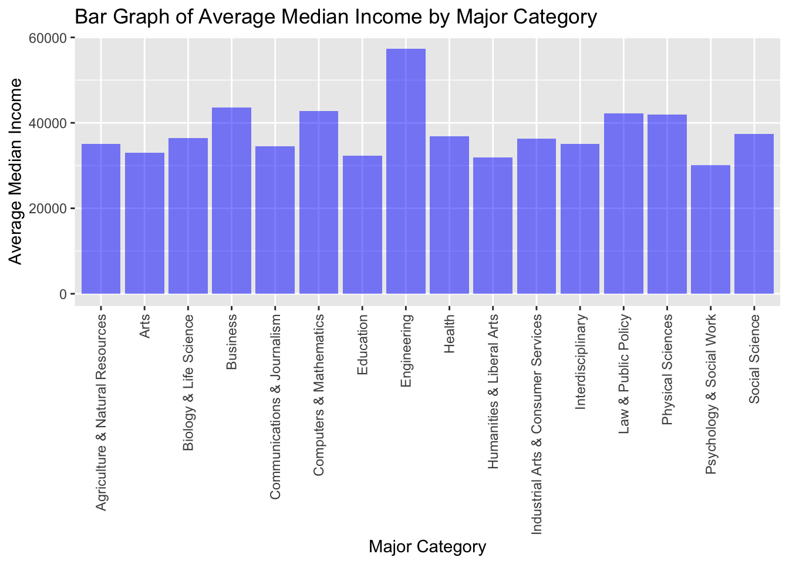
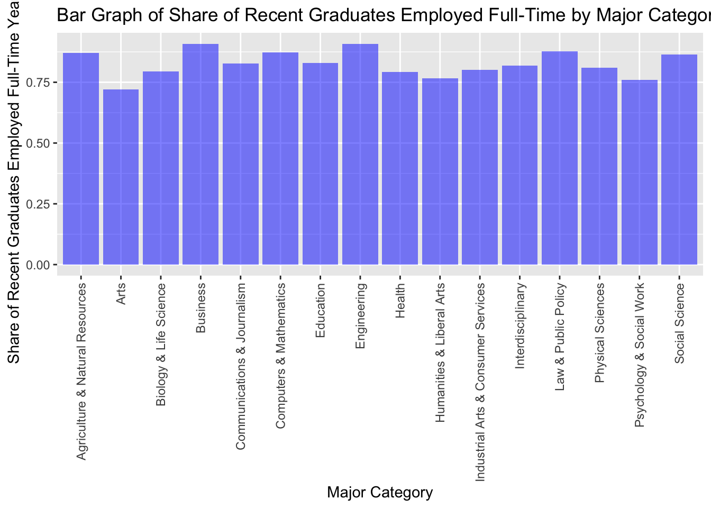